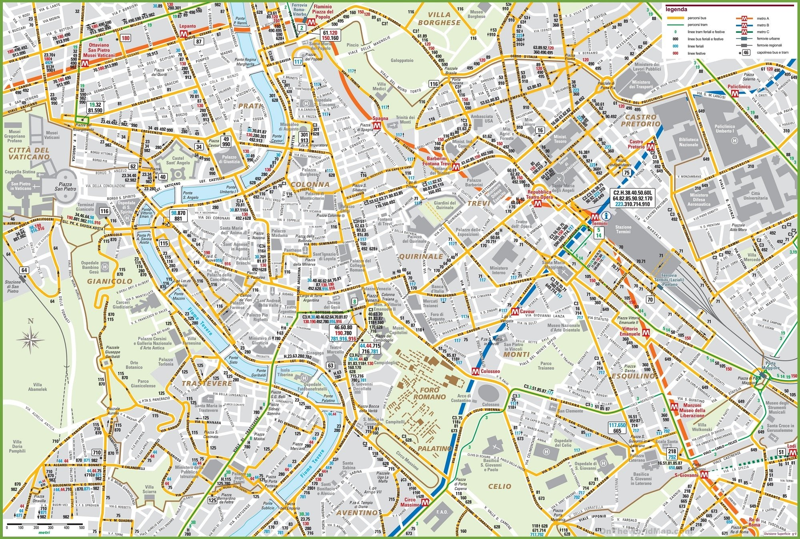

Le colisée de Rome
Le Colisée, à l'origine amphithéâtre Flavien (Colosseo en italien), est un immense amphithéâtre ovoïde situé dans le centre de la ville de Rome, entre l'Esquilin et le Cælius, le plus grand jamais construit dans l'Empire romain.
Il est l'une des plus grandes œuvres de l'architecture et de l'ingénierie romaines.
Sa construction, juste à l'est du Forum Romain, a commencé entre 70 et 72 apr. J.-C., sous l'empereur Vespasien, et s'est achevée en 80 sous Titus. D'autres modifications ont ensuite été apportées au cours du règne de Domitien (81-96)1. Le nom d'amphithéâtre Flavien dérive du nom de famille (gens Flavii) de l'empereur Vespasien et ses fils Titus et Domitien. Pouvant accueillir probablement 50 000 spectateurs (les estimations plus anciennes de 80 000 spectateurs, soit un douzième de la population romaine, étant exagérées)2, le Colisée a été utilisé pour les venationes (combats d'animaux sauvages), les munera (combats de gladiateurs) et autres spectacles publics, tels que des exécutions de condamnés à mort, des reconstitutions de batailles célèbres et des drames basés sur la mythologie romaine. Il est resté en service pendant près de 500 ans, les derniers jeux se prolongeant jusqu'au vie siècle. Pour l'inauguration du Colisée, en 80 apr. J.-C., Titus donne une naumachie dans le Colisée transformé en bassin reconstituant la bataille navale de Corinthe contre Corcyre. Le bâtiment a finalement cessé d'être utilisé au cours du haut Moyen Âge. Il a plus tard été réutilisé pour des usages variés tels que des habitations, des ateliers d'artisans, le siège d'un ordre religieux, une forteresse, une carrière et un sanctuaire catholique chrétien.